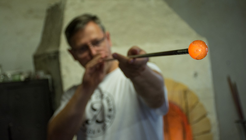

Presuň jednotlivé kroky výroby skla do správneho poradia.
Kroky
Proces
0/6

Gratulujeme! Stal si sa majstrom sklárskeho remesla.
Práve si si vyskúšal/-a základný postup výroby skla. Podobným
spôsobom vznikali sklenené výrobky aj v sklárskych hutách v
Gápeli, Lednických Rovniach či Nemšovej.